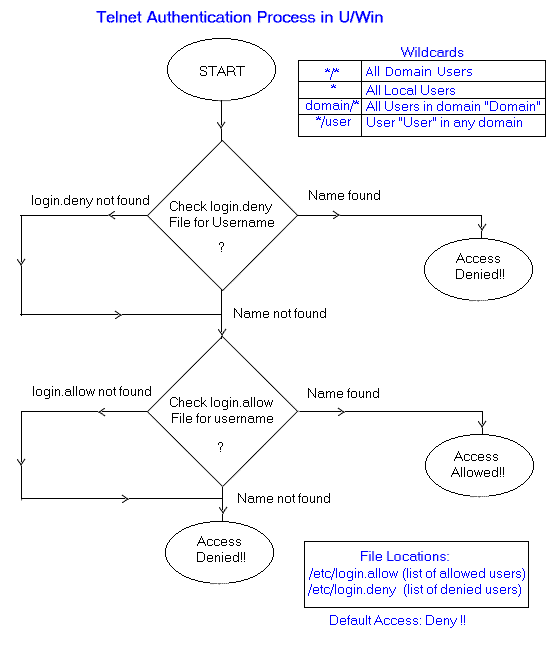

|
Managing Access for Local/Domain
Users
in UWIN Telnet Server
Previous implementation
In the previous implementation,
the UWIN UMS Service generated the /etc/passwd file. The
UMS Service queried the Local System and the Primary Domain Controller
for all the users, and created entries for every local as well as domain
user in the /etc/passwd file. This caused a
severe network activity if there were a large number of users in the domain.
New Implementation
The UMS service upon startup queries
the Local system and creates entries for all the local users in the /etc/passwd
file. The /etc/passwd file now no longer contains entries for domain users.
Whenever a domain user tries to login (through telnet/rlogin/etc.), the
Primary Domain Controller is queried for that user at run-time. A new
entry for that user is created in the /etc/passwd file. In this manner,
the entry is cached for the present session. The Domain Controller
is not queried for subsequent logins by the user. The local /etc/passwd
file is used for further queries.
However, on next reboot of the system,
the /etc/passwd file is regenerated and all the previously cached domain
entries are lost.
The UMS service after generating
the /etc/passwd file, appends the entries made into the /etc/passwd.add
file onto the /etc/passwd file. Using the /etc/passwd.add file passwd entries
can be cached and written into the /etc/passwd file. The user is responsible
for the entries made into the /etc/passwd.add file.
Restricting Access to Local/Domain
Users?
For U/Win systems with a large number
of Local and Domain users, there can be a need to restrict Telnet Access
to some users. This feature can be used to prevent undesired access to
the resources of the U/Win system by users.
The user information is stored in
/etc/login.deny and /etc/login.allow files.

The administrator is allowed access
at all times, irrespective of whether the entry is present in the deny
file or not.
The /etc/login.deny file carries
precedence over the /etc/login.allow file, i.e. the telnet server checks
the login.deny file first for the username. If found, the user is denied
access, even if his entry is present in the /etc/login.allow file. If the
name is not found in the login.deny file, the login.allow file is searched.
If the name is found in the login.allow file then the user is granted access.
The default action is to deny access.
This means that if the username is absent in both the files or if both
the files are absent, then the user is denied access.
The following wildcards can be used
to specify users :-
| */* |
all domain users |
| * |
all users on the local machine |
| xxx/* |
all users on domain "xxx" |
| */xxx |
the user "xxx" from any domain |
Shivjit Mohapatra
Wipro Technology Solutions
uwin@wipro.com
Last
Modified: Friday, May 29, 1998
© 1998, Wipro Limited. |